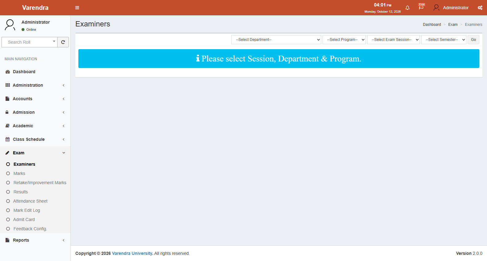
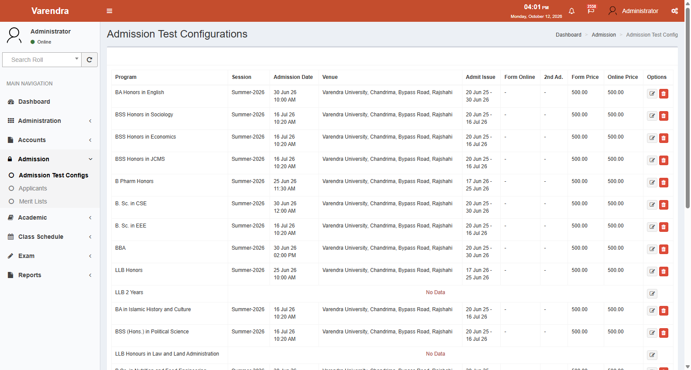
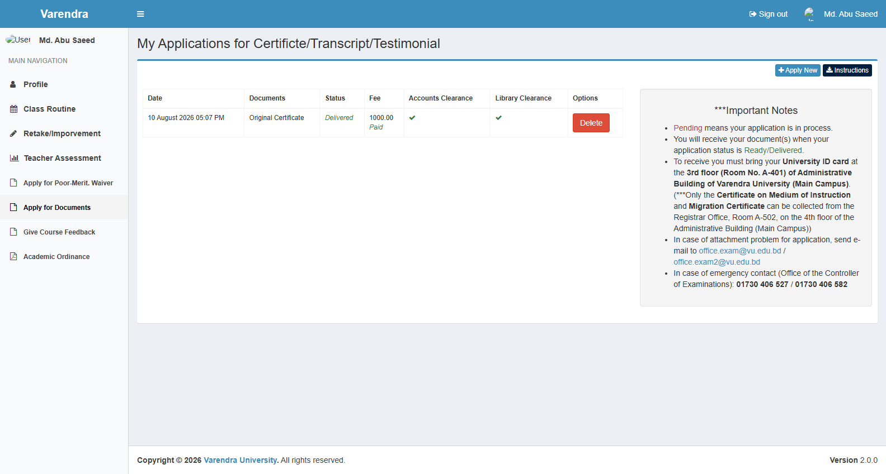

04 — Cross-Module Workflows
EasyMate ERP — Inter-Departmental Operations and System Interactions
This document details the end-to-end operational workflows that span multiple modules, departments, and user roles in EasyMate ERP. It demonstrates how data flows across module boundaries—from admission, academic setup, and class scheduling to automated registration, fee invoicing, marks entry, result publication, and graduation clearance.
Verification Status: All cross-module workflows, algorithmic formulas, and progression gates are verified in the source code. UI interactions and screenshots remain pending live capture.
Architectural Context & System Boundaries
EasyMate ERP is the central academic management system for Varendra University. Its modules do not operate in isolation; each phase of a student's academic journey requires tightly orchestrated data handoffs between administrative, academic, accounts, and examination functions.
┌────────────────────────────────────────────────────────────────────────────────────────┐
│ SYSTEM SCOPE & BOUNDARIES │
├─────────────────────────────────────────────────┬──────────────────────────────────────┤
│ EASYMATE ERP │ EXTERNAL HRM SYSTEM │
│ (Documented in this Manual) │ (Excluded from Scope) │
├─────────────────────────────────────────────────┼──────────────────────────────────────┤
│ • Public Applicant Portal & Board Data Sync │ • Faculty & Staff Recruitment │
│ • Admission Tests, Merit Lists & Enrollment │ • Employee Attendance Biometrics │
│ • Academic Hierarchy, Syllabuses & Courses │ • Employee Leave Application/Approval│
│ • Class Schedule, Rooms, Slots & Routines │ • Payroll, Salary & Compensation │
│ • Semester Registration (Auto & Manual) │ • Staff Performance Management │
│ • Tuition Invoicing, Waivers & Fee Postings │ • Employee Personal Service Books │
│ • Course Examiners, Marks & Approvals │ │
│ • SGPA/CGPA Calculation & Result Publication │ │
│ • Transcripts, Certificates & Verifications │ │
└─────────────────────────────────────────────────┴──────────────────────────────────────┘
Important Boundary Rule: EasyMate ERP maintains User records for faculty and staff solely for system authentication, role-based authorization, and course examiner assignments. All institutional HR operations (recruitment, biometric clock-in, leave approvals, payroll, and appraisals) are executed in external HRM software.
Workflow Matrix: Cross-Module Interactions
| Workflow | Primary Trigger | Modules Involved | Key Data Artifacts | Handled By |
|---|---|---|---|---|
| 1. Admission to Enrollment | Intake session announcement | Admission, Administration, Academic, Accounts | Applicant, ApplicantBoard, AdmissionTestConfig, Application, Student |
Admission Officer, Accounts Officer |
| 2. Program & Syllabus Setup | Curriculum revision / new intake | Administration, Academic | Faculty, Department, Program, ProgramVersion, Syllabus, Course, MarkConfig |
Academic Office, Admin |
| 3. Schedule & Routine | Pre-semester planning | Class Schedule, Academic, Exam | Room, Slot, Offer, Examiner, Routine |
Department Head, Academic Office |
| 4. Semester Registration & Invoicing | Semester start / settings date | Academic, Accounts, Administration | Registration, AutoRegistrationLog, Invoice, InvoiceDetail, Waiver, Ledger |
Academic Office, Accounts Officer |
| 5. Payments & Financial Clearance | Student payment submission | Accounts, Student Portal | Invoice, Installment, Payment, Ledger, Approval |
Accounts Officer, Student |
| 6. Teacher Marks Entry & Verification | Midterm / Final exam schedule | Exam, Class Schedule, Academic | Mark, MarkConfig, Submission, CourseRegistrationSection |
Teacher (Examiner), Exam Staff |
| 7. Result Approval & Publication | Controller grade review | Exam, Academic, Student Portal | Approval, CourseResult, SemesterResult, Result |
Controller of Exams, System Admin |
| 8. Progression & Graduation | Result published / degree audit | Academic, Accounts, Exam, Student Portal | SemesterResult, Readmission, DocumentApplication, Certificate, Ledger |
Academic Office, Accounts, Student |

Workflow 1: Admission to Student Enrollment
┌──────────────────┐ ┌──────────────────┐ ┌──────────────────┐
│ Applicant │────▶│ Board API / │────▶│ Profile │
│ Registration │ │ Scraper Sync │ │ Completion (5) │
└──────────────────┘ └──────────────────┘ └──────────────────┘
│
▼
┌──────────────────┐ ┌──────────────────┐ ┌──────────────────┐
│ Application │────▶│ Admit Card │────▶│ Test & Merit │
│ & Fee Payment │ │ Issuance │ │ List Processing │
└──────────────────┘ └──────────────────┘ └──────────────────┘
│
▼
┌──────────────────┐ ┌──────────────────┐ ┌──────────────────┐
│ Semester-1 │◀────│ Roll Number │◀────│ Transfer to │
│ Registration │ │ Assignment │ │ Student Record │
└──────────────────┘ └──────────────────┘ └──────────────────┘
Operational Steps
Step 1.1: Academic Calendar & Admission Configuration
- System Administrator navigates to Administration → Settings:
- Sets Setting ID 1 (
Current Exam Sessione.g., "Spring-2026"). - Sets Setting ID 9 (
Admission Start Date) and Setting ID 10 (Admission Last Date). - Admission Officer navigates to Admission → Admission Test Configs → Create (
admissiontestconfigs.create): - Selects target
ProgramandSession. - Defines
Admission Test Date,Admission Test Time, andVenue. - Sets
Admit Card Start DateandAdmit Card End Date. - Toggles
Form Online = 1to enable application fee collection.

Step 1.2: Applicant Registration & National Board Data Sync
- Applicant visits root URL (
/), which redirects tofront.applicant.home.index(/front/applicant/home). - Fills registration form with SSC and HSC Board, Roll Number, Registration Number, Passing Year, Mobile Number, and Password.
- System invokes
BoardDataservice (Teletalk API) to fetch verified education records: - If API fails, system activates fallback scraper
BoardDataScrap. - If both fail, applicant account is created with
board_data_manual_pending_verification = 1. - If successful, system auto-populates full student name, parents' names, date of birth, gender, and GPA into
ApplicantBoardrecords. - Applicant is authenticated under session guard
auth.applicantand redirected to profile completion.
Step 1.3: Profile Completion & Application Submission
- Applicant completes 5 profile sections: Personal Information (
pi), Contact Information (ci), Education (eb), Guardian Information (lg), and Document Attachments (at). - Applicant selects program(s) of interest and submits application (
front.applicant.applications.create). - An
Invoice(Type 1: Form Sale / Application Fee) is automatically generated. - Applicant pays via integrated gateway or bank counter.
Step 1.4: Admit Card & Admission Test Administration
- Upon payment confirmation (
Invoicestatus =paid), applicant downloads the Admit Card (front.applicant.applications.admit). - After the admission test, Admission Officer records scores or creates merit lists in Admission → Merit Lists (
admissionmeritlists.index).
Step 1.5: Enrollment & Transfer to Student Record
- In Admission → Applicants (
applicants.index), Admission Officer filters qualified applicants with confirmed payments. - Admission Officer clicks Transfer (
applicants.transfer): - System transforms
Applicantrecord into a permanentStudentrecord (app/Student.php). - Copies demographic data, guardian details, verified board data, and address records.
- Sets student
active = 1and records intake session. - Academic Office navigates to Academic → Students → Edit (
students.edit) and assigns the official University Roll Number (e.g.,261311001). - Student is now ready for Semester 1 course registration.
Workflow 2: Academic Program & Syllabus Architecture
┌──────────────────┐ ┌──────────────────┐ ┌──────────────────┐
│ Faculty & │────▶│ Program & │────▶│ Program Version │
│ Department │ │ Degree Level │ │ (Installments, │
└──────────────────┘ └──────────────────┘ │ Years, Terms) │
└──────────────────┘
│
▼
┌──────────────────┐ ┌──────────────────┐ ┌──────────────────┐
│ Assessment │◀────│ Course Setup │◀────│ Syllabus │
│ Schema Config │ │ (Theory/Lab/ │ │ Binding to │
│ (AssessmentRule)│ │ Credits/Hours) │ │ Intake Session │
└──────────────────┘ └──────────────────┘ └──────────────────┘
Operational Steps
Step 2.1: Organizational Hierarchy Setup
- Administrator defines university structure:
- Administration → Faculties (
faculties.index): Creates Faculties. - Administration → Departments (
departments.index): Creates Departments linked to faculties. - Administration → Programs (
programs.index): Creates academic programs tied to degree levels (UndergraduateorGraduate).
Step 2.2: Program Version Rules
- In Administration → Programs → Versions → Create (
programs.versions.createat/programs/versions/create/{program_id}): semesters_per_year: 2 (Bi-semester: Spring/Fall) or 3 (Tri-semester: Spring/Summer/Fall).total_years: Typically 4 years for undergraduate programs.payment_installments: Defines installment splitting (2 or 3 installments per semester).
Step 2.3: Syllabus Construction & Session Binding
- Academic Office navigates to Academic → Syllabuses → Create (
syllabuses.create): - Binds syllabus to program and intake session (e.g., "Syllabus 2024" for students admitted from "Spring-2024" onwards).
- In Academic → Courses (
courses.index), courses are registered with: - Course Code, Title, Credit Hours, Contact Hours.
- Classification:
theory = 1(Theory) ortheory = 0(Sessional / Lab / Project). - Courses are mapped to the syllabus semester-by-semester in Academic → Syllabuses → Add Courses (
syllabuses.addcourses): - Maps Semester Number (1 to 8 or 1 to 12).
- Configures elective groups (
group_id).
Step 2.4: Assessment Rules Configuration (assessmentrules.index)
- In Academic → Assessments → Assessment Rules (
assessmentrules.index), assessment percentages are allocated by course type: - Theory Courses: Attendance (10%), Class Tests (20%), Midterm (30%), Final (40%).
- Lab / Sessional Courses: Attendance (10%), Continuous Lab Performance (40%), Final Lab/Viva (50%).
Workflow 3: Class Schedule & Routine Setup
┌──────────────────┐ ┌──────────────────┐ ┌──────────────────┐
│ Physical │────▶│ Time Slots │────▶│ Course Offering │
│ Rooms & Labs │ │ & Week Days │ │ & Sections │
└──────────────────┘ └──────────────────┘ └──────────────────┘
│
▼
┌──────────────────┐ ┌──────────────────┐ ┌──────────────────┐
│ Published │◀────│ Schedule │◀────│ Teacher │
│ Class Routines │ │ Preferences │ │ Assignment │
│ (Portal View) │ │ & Collision Res.│ │ (Examiner Link) │
└──────────────────┘ └──────────────────┘ └──────────────────┘

Operational Steps
Step 3.1: Campus Infrastructure & Grid Setup
- Staff navigates to Class Schedule → Rooms (
rooms.index): - Configures rooms with building, floor, room number, and seating capacity.
- In Class Schedule → Slots (
slots.index): - Configures standard lecture periods and weekly days (Sunday through Thursday).
Step 3.2: Course Offerings & Teacher Assignment
- In Class Schedule → Course Offer (
courseoffers.index): - Selects Exam Session and Program.
- Configures section splits (Section A, B, C) via
courseoffers.config-sections. - Assigns instructors to sections via
courseoffers.add-examiner, which establishes examiner privileges in the Exam module. - In Class Schedule → Schedule Merges (
courseoffers.schedule-merges): - Configures merged lecture sections for shared time slots.
Step 3.3: Routine Generation & Live Sync
- In Class Schedule → Schedule Create (
schedules.create), assign room and slot combinations to course sections. - The collision checker (Class Schedule → Conflicts at
schedule.conflicts) flags any teacher or room double-bookings. - Once verified, staff navigates to Class Schedule → Live Schedule (
schedules-live.index) and syncs draft routines to the live schedule. - Class schedules immediately populate:
- Student Portal: Students see a personalized routine based on registered courses (
front.student.routine.index). - Printable PDF: Downloadable for departmental notice boards (
schedules-live.pdf).
Workflow 4: Semester Registration & Financial Integration
┌─────────────────────────────┐
│ Auto-Registration Trigger │
│ (Batch by Program/Session) │
└──────────────┬──────────────┘
│
▼
┌─────────────────────────────┐
│ Eligibility Verification │
│ • 7-Year study limit │
│ • Suspensions & Disciplinary│
│ • Financial clearance upto │
│ • Previous session existence│
│ • Previous semester result │
└──────────────┬──────────────┘
│
┌──────────────────────┴──────────────────────┐
│ │
[Promotion Criteria Met] [Promotion Criteria Failed]
│ │
▼ ▼
┌─────────────────────────────┐ ┌─────────────────────────────┐
│ 1. Increment semester_id │ │ 1. Retain same semester_id │
│ 2. Sync regular courses │ │ 2. Log Readmission record │
│ 3. Retain section_id │ │ 3. Assign new section_id │
└──────────────┬──────────────┘ └──────────────┬──────────────┘
│ │
└──────────────────────┬──────────────────────┘
│
▼
┌─────────────────────────────┐
│ Course Categorization │
│ • Regular syllabus courses │
│ • Retake courses (GP = 0) │
│ • Improvement (GP <= 2.75) │
│ • Omit Exempted courses │
└──────────────┬──────────────┘
│
▼
┌─────────────────────────────┐
│ Tuition & Fee Calculation │
│ • Regular Tuition = Rate×Cr │
│ • Retake = Rate×50%×Cr │
│ • Improvement = Rate×25%×Cr │
│ • Fixed & Lab fees │
│ • Non-collegiate fine check │
└──────────────┬──────────────┘
│
▼
┌─────────────────────────────┐
│ Waiver Engine Evaluation │
│ • Auto-waiver from GPA/CGPA │
│ • Manual approved category │
│ • Select MAX(Auto, Manual) │
│ • Discount applied to tuition│
└──────────────┬──────────────┘
│
▼
┌─────────────────────────────┐
│ Financial Ledger & Invoice│
│ • Create Invoice (Type 2) │
│ • Post Debit to Ledger (D) │
│ • Generate Installments │
│ (Deadlines from Settings) │
└─────────────────────────────┘
Operational Steps
Step 4.1: Pre-Registration Validation & Gatekeeping
Auto-registration (app/Libs/AutoRegistration.php) verifies:
1. 7-Year Degree Duration Limit: $student->is7YearsPlus($exam_session) bars registration if elapsed time > 7 years.
2. Disciplinary Suspension Check: $student->isSuspendedTemporarily($exam_session) blocks suspended students.
3. Financial Clearance Barrier (accountClearUpto): Unpaid debit balances from previous sessions terminate registration with: "Payment is not clear.".
4. Consecutive Session Requirement: Verifies student was registered in preceding session.
5. Result Availability: Verifies prior semester examination results are officially published.
Step 4.2: Academic Progression Determination
- Promoted (
resultCheckreturns TRUE): - Advances:
$student->semester_id += 1. - Instantiates
Registrationrecord; retains cohort section. - Not Promoted (
resultCheckreturns FALSE): - Retains same semester; creates
Readmissionrecord. - Reassigns section and registers for failed courses.
Step 4.3: Course Identification & Credit Classification
- Regular Courses: Core and elective courses assigned to current semester in student syllabus.
- Retake Courses (
retake): Previously failed courses ($GP = 0$ or null). Billed at 50% of the tuition rate per credit. - Improvement Courses (
improvement): Passed theory courses where the student earned $GP \le 2.75$ ($B-$ or lower). Sessional/lab courses cannot be improved. Billed at 25% of the tuition rate per credit. - Exempted Courses: Transferred courses (
exempted_coursestable) are skipped.
Step 4.4: Invoicing & Fee Structure (GenerateInvoice.php)
- Fetches approved per-credit tuition rate for program and session from
FeeSetting(Account Head 1). - Computes Tuition: $$\text{Regular Tuition} = \text{Rate} \times \text{Regular Credits}$$ $$\text{Retake Tuition} = \text{Rate} \times 0.50 \times \text{Retake Credits}$$ $$\text{Improvement Tuition} = \text{Rate} \times 0.25 \times \text{Improvement Credits}$$
- Appends mandatory fixed fees (Development, Exam, Lab, Library, Co-Curricular).
- Assesses non-collegiate penalty (Account Head 8) if attendance fell in the 50%–74% bracket.
Step 4.5: Scholarship & Tuition Waiver Resolution
WaiverCalculator resolves financial assistance:
1. Compares auto-waiver against manual committee waiver and selects the higher benefit:
$$\text{Final Waiver \%} = \max(\text{Auto Waiver \%}, \text{Manual Waiver \%})$$
2. Applies discount strictly to Regular Tuition Fee:
$$\text{Net Regular Tuition} = \text{Regular Tuition} \times \left(1 - \frac{\text{Waiver \%}}{100}\right)$$
Step 4.6: Ledger Posting & Installments
- Creates an
Invoice(Type 2: Semester Registration Invoice) with statuspending. - Posts a Debit entry (
type = 'D') inLedger. - Splits invoice into installments based on
ProgramVersion: - Installment 1: Due on
1st Installment Last Date(Settings 4/6). - Installment 2: Due on
2nd Installment Last Date(Setting 5). - Installment 3: Due on
3rd Installment Last Date(Setting 14, if applicable).
Workflow 5: Payment Processing & Financial Settlement
┌──────────────────┐ ┌──────────────────┐ ┌──────────────────┐
│ Student Views │────▶│ Payment via │────▶│ Bank Scroll / │
│ Invoice/Slip │ │ Bank or Counter │ │ Teller Receipt │
└──────────────────┘ └──────────────────┘ └──────────────────┘
│
▼
┌──────────────────┐ ┌──────────────────┐ ┌──────────────────┐
│ Real-Time │◀────│ Ledger Credit │◀────│ Accounts │
│ Financial Clear │ │ (Type C) & │ │ Posting & │
│ (Exam Clearance)│ │ Invoice Status │ │ Late Fine Calc │
└──────────────────┘ └──────────────────┘ └──────────────────┘
Operational Steps
Step 5.1: Student Invoicing & Payment Modes
- Student accesses Student Portal → Profile → Payments tab (
/front/student/profile?type=p). - Downloads 3-part Bank Deposit Slip from
/printinvoices/index/{id}. - Submits cash at partner banks or university cashiers.
Step 5.2: Late Fine Enforcement
- When an installment is paid past
last_payment_date, system computes fines (50 BDT/day), excluding official holidays recorded in theHolidaytable.
Step 5.3: Accounts Posting & Reconciliation (invoices.posting)
- Accounts Officer opens Accounts → Invoices → Posting (
invoices.posting). - Enters payment parameters: Bank Branch, Date (
approved_on), Transaction Reference, and Installment number. - Sequential Installment Enforcement (Verified in Code):
- If Installment 1 is unpaid, system refuses posting for Installment 2:
"1st Installment not paid yet!" - Upon valid submission:
- Creates a
Paymentrecord with polymorphicApproval. - Updates target
Installmenttopaid. - If total payments equal invoice amount, transitions
Invoicestatus topaid. - Posts a Credit entry (
type = 'C') toLedger. - Dispatches SMS/email notification to student if enabled (
TuitionFeePaid).
Workflow 6: Teacher Operations & Marks Management
┌──────────────────┐ ┌──────────────────┐ ┌──────────────────┐
│ Teacher Login │────▶│ Filter Session, │────▶│ Attendance │
│ & Examiner Link │ │ Course & Section│ │ Evaluation │
└──────────────────┘ └──────────────────┘ └──────────────────┘
│
▼
┌──────────────────┐ ┌──────────────────┐ ┌──────────────────┐
│ Marks Locked & │◀────│ Teacher Mark │◀────│ Assessment │
│ Submission Log │ │ Submission │ │ Entry (CT, Mid, │
│ Created │ │ (Self-Lock) │ │ Final, Status) │
└──────────────────┘ └──────────────────┘ └──────────────────┘
Operational Steps
Step 6.1: Examiner Authorization
- Only instructors mapped as active examiners in
course_offeringshave write access to student marks for that specific course and section.
Step 6.2: Class Attendance Auditing
Under Reports → Registration → Non Collegiate Report (report.registration.noncollegiate), student attendance is evaluated:
- Collegiate: Attendance $\ge 75\%$ (Undergraduate/Master) or $\ge 60\%$ (other programs). Eligible for final exam.
- Non-Collegiate: Attendance $50\%$–$74\%$ (or $40\%$–$59\%$). Permitted to sit for final exam only after paying penalty fee.
- Dis-Collegiate: Attendance $< 50\%$ (or $< 40\%$). Barred from semester final exam; course must be retaken.
Step 6.3: Assessment Entry & Submission Locking
- Teacher navigates to Exam → Marks (
marks.index) or Exam → Retake/Improvement Marks (marks.retests). - Filters by Exam Session, Program, Semester, Course, and Section.
- Enters Attendance, CT, Midterm, and Final marks; sets status (
p,a,e). - Clicks Save: Commits marks to
markstable. - Clicks Submit (
marks.submit): Creates aSubmissionrecord and freezes instructor editing.
Workflow 7: Result Approval, Processing & Publication
┌──────────────────┐ ┌──────────────────┐ ┌──────────────────┐
│ Controller of │────▶│ Mark Approval │────▶│ CourseResult │
│ Examinations │ │ & Grade Lock │ │ Creation │
│ Audit │ │ (Approval rec) │ │ (GP, LG Stored) │
└──────────────────┘ └──────────────────┘ └──────────────────┘
│
▼
┌──────────────────┐ ┌──────────────────┐ ┌──────────────────┐
│ Semester Result │◀────│ Validation Gate │◀────│ Batch SGPA │
│ Publication │ │ (ALL Courses │ │ Calculation & │
│ (published = 1) │ │ Approved?) │ │ Student Ranking │
└──────────────────┘ └──────────────────┘ └──────────────────┘
│
▼
┌──────────────────┐ ┌──────────────────┐ ┌──────────────────┐
│ Student Portal │────▶│ Tabulation │────▶│ Graduating Term │
│ Results Tab │ │ Sheets (PDF) │ │ Email Alerts │
└──────────────────┘ └──────────────────┘ └──────────────────┘
Operational Steps
Step 7.1: Controller Audit & Course Mark Approval
- Controller navigates to Exam → Marks → Approve (
marks.approve). - Filters by Session, Program, Semester, Course, and Section.
- Verifies marks distribution and clicks Approve:
- Registers an
Approvalrecord. - For every student in that section, creates a permanent
CourseResultrecord:- Aggregates component marks into a total mark out of 100.
- Resolves Letter Grade (LG) and Grade Point (GP) via
Grade::calculate(). - Absent or expelled in final results in
F($GP = 0.00$).
Step 7.2: Batch SGPA Compilation & Ranking
- Controller navigates to Exam → Results → Create (
results.create). - Selects Exam Session, Program, and Semester.
- System triggers calculation engine across all registered students: $$\text{Points} = \sum (\text{Course Credits} \times \text{Course GP})$$ $$\text{Total Credits} = \sum \text{Registered Credits}$$ $$\text{SGPA} = \frac{\text{Points}}{\text{Total Credits}} \quad (\text{rounded to 2 decimal places})$$
- Instantiates
SemesterResult: - Stores SGPA, total marks, registered credits, and earned credits ($GP > 0$).
- Orders cohort by
SGPA DESC, followed byTotal Marks DESC, assigning sequential integer ranks (rank = 1, 2, 3...).
Step 7.3: All-Course Verification Gate & Publication
- System validates that every single course offering and section in the semester has an approved submission:
Submission::checkApproval(...) == true - If even one section lacks approval, processing halts:
"Result is not ready to be published!" - If all sections are approved, Controller clicks Publish:
Resultrecord is flaggedpublished = 1and timestamped.- Immediate Visibility: Students view published grades on the Student Portal under Profile → Results tab (
/front/student/profile?type=r). Official Tabulation Sheets (results.pdf) are unlocked.
Step 7.4: Administrative Undo
- Only a System Administrator (Role ID 1) can navigate to Exam → Marks → Undo (
marks.undo) to purge approval and submission records, resetResult.published = 0, and reopen marks entry.
Workflow 8: Academic Progression, Degree Completion & Graduation
┌──────────────────┐ ┌──────────────────┐ ┌──────────────────┐
│ Result │────▶│ Progression │────▶│ Subsequent │
│ Published │ │ Evaluation │ │ Session Reg. │
└──────────────────┘ │ (Pass / Drop) │ │ (Retake/Imprv) │
└──────────────────┘ └──────────────────┘
│
▼
┌──────────────────┐ ┌──────────────────┐ ┌──────────────────┐
│ Degree Audit │◀────│ Best Attempt │◀────│ All Courses │
│ Verification │ │ CGPA Engine │ │ Passed & │
│ (Total Credits) │ │ (Max GP Select) │ │ Required Sem. │
└──────────────────┘ └──────────────────┘ └──────────────────┘
│
▼
┌──────────────────┐ ┌──────────────────┐ ┌──────────────────┐
│ Document Appl. │────▶│ Accounts & │────▶│ Certificate & │
│ via Portal │ │ Library Clear. │ │ Transcript │
│ (Fee Paid) │ │ (Clearance Gate)│ │ Issuance │
└──────────────────┘ └──────────────────┘ └──────────────────┘
│
▼
┌──────────────────┐
│ Public Token │
│ Verification │
│ URL Live │
└──────────────────┘
Operational Steps
Step 8.1: Post-Result Progression & Retake Rules
- Students with $GP \ge 1.00$ in all courses are cleared for regular promotion.
- Students with an F grade ($GP = 0$) in any course are flagged for Retake in the next available session.
- Students with $GP \le 2.75$ ($B-$ or below) in a theory course qualify for Improvement. Sessional/lab courses cannot be improved.
Step 8.2: Cumulative Grade Point Average (CGPA) Calculation
EasyMate ERP implements the university's Best Attempt Rule (app/Student.php):
1. For retaken or improved courses:
$$\text{Final Course Result} = \max(GP_{\text{all attempts}})$$
2. Current CGPA (cgpa_current): Computed dynamically across all completed distinct courses to date where $GP > 0$:
$$\text{CGPA}{\text{current}} = \frac{\sum (\text{Credits} \times \text{Best GP})}{\sum \text{Credits of Completed Courses}}$$
3. Final Graduating CGPA (cgpa): Calculated against total curriculum requirements:
$$\text{CGPA}$$}} = \frac{\sum (\text{Credits} \times \text{Best GP})}{\text{Syllabus Required Credits} - \text{Exempted Credits}
Step 8.3: Degree Audit & Student Completion
- Academic Office verifies:
- Student has completed all required semesters.
- Total earned credits equal or exceed syllabus requirements.
- Final CGPA meets minimum graduation threshold ($\ge 2.00$, subject to ordinance confirmation).
- Student has zero unresolved "F" grades.
- Academic Office marks student record as Completed (
completed = 1).
Step 8.4: Academic Document Application & Institutional Clearance
- Student navigates to Student Portal → Apply for Documents (
front.student.documentapplications.index) and selects requested documents. - System generates miscellaneous document invoice; student pays fee.
- Multi-department clearance in Academic → Student Applications → Document Applications (
documentapplications.index): - Accounts Clearance (
documentapplications.accounts_clearance): Accounts Officer verifies that the student ledger balance is zero across all years (ledgerBalance). - Library Clearance (
documentapplications.library_clearance): Library staff approves return of all materials. - Staff prepares documents and marks status Ready (
documentapplications.ready). - When collected by the graduate, staff marks status Delivered (
documentapplications.deliver).
Step 8.5: Public Digital Certificate Verification
Employers and embassies verify graduate certificates at:
/front/services/studentverify/certificate/{token}
Cross-Module Failure Modes & Remediation Matrix
| Failure Mode | Module Affected | Technical Root Cause in Code | Authorized Role | Remediation Procedure |
|---|---|---|---|---|
| Auto-registration fails with "Payment is not clear" | Academic / Accounts | Student has unpaid debit entries from prior sessions (accountClearUpto check failed) |
Accounts Officer | Verify pending bank payments, post missing installment payments in Accounts → Invoices → Posting, then retry auto-registration. |
| Auto-registration fails with "Syllabus not ready" | Academic | No syllabus record bound to student intake session in syllabuses table |
Academic Office Staff | Navigate to Academic → Syllabuses, create or bind a syllabus version to the student's intake session, map courses, and retry. |
| Auto-registration fails with "7 Years Plus" | Academic | Student elapsed time exceeds 7-year degree limit ($student->is7YearsPlus()) |
Academic Office / Registrar | If authorized by Academic Council, grant special tenure extension via Academic Office before processing manual registration. |
| Invoice generated without expected waiver | Accounts | WaiverCalculator failed threshold or manual waiver was unapproved |
Accounts Officer | Create waiver in Accounts → Waivers, approve it, regenerate or adjust invoice in Accounts → Invoices. |
| Cannot pay 2nd installment ("1st Installment not paid yet") | Accounts | Strict sequential payment validation in InvoicesController |
Accounts Officer | Post payment for 1st installment first. System blocks 2nd installment until 1st installment status is paid. |
| Teacher unable to enter marks for course | Exam / Class Schedule | Teacher not mapped as examiner in course_offerings or section mismatch |
Academic Office / Schedule Coordinator | Verify teacher assignment in Class Schedule → Course Offer. Ensure examiner record matches the user ID. |
| Result publish blocked: "Result is not ready to be published" | Exam | One or more course sections have not completed Controller approval (Submission::checkApproval) |
Examination Controller | Review all courses and sections in the semester. Ensure teachers submitted marks and Controller approved each section. |
| Student cannot download Final Transcript | Academic / Accounts | Outstanding financial dues exist or student not flagged as completed (completed = 0) |
Accounts / Academic Office | Ensure full ledger credit balance via accounts posting. For final transcript, verify all degree requirements and mark student as completed. |
